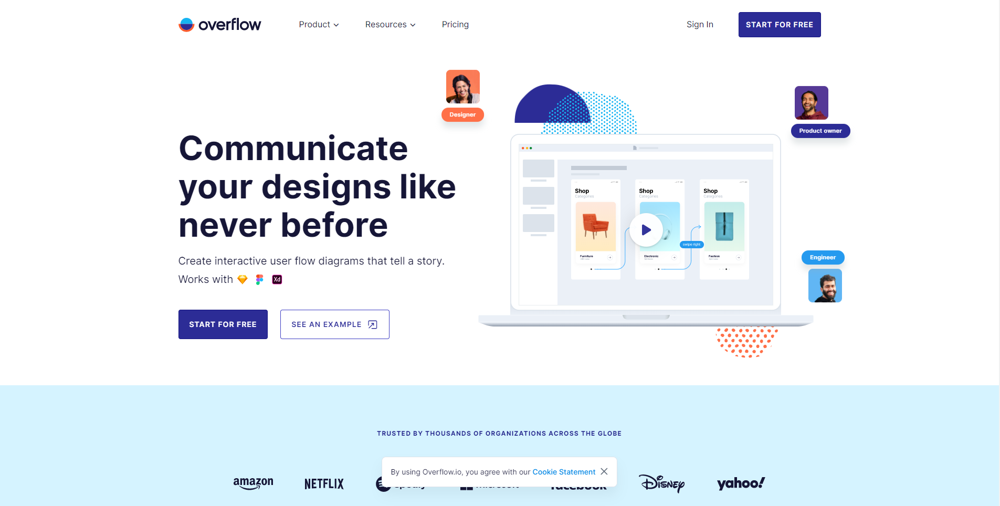
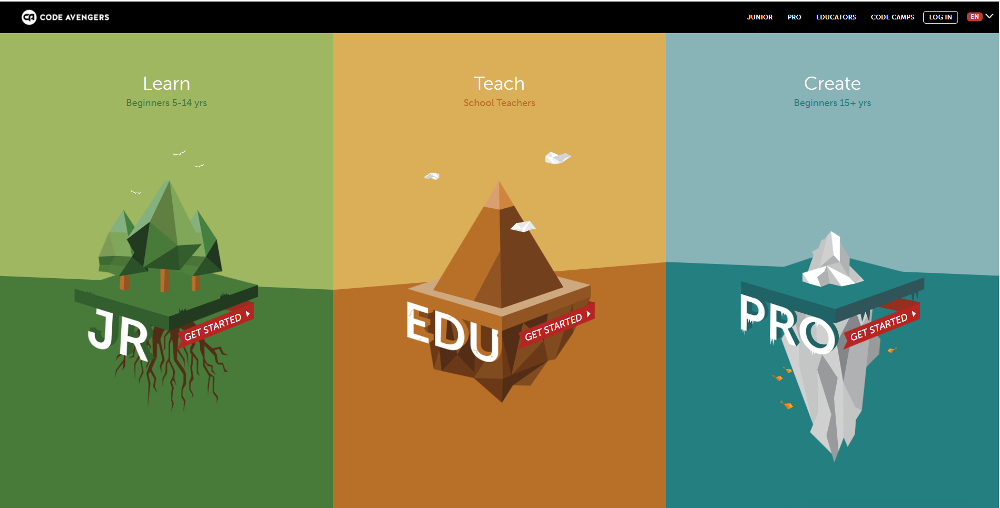

Concept
Programming is a word that describes how code is giving a computer a set of instructions for it to be completed. Programming is the basis behind how the computer works and all the elements which flow on from the computer e.g. internet, websites, games. Programming can be used in many ways depending on the task at hand, set by the programmer. There are five main programming languages which often used by programmers which are – procedural, functional, object-oriented, scripting, logic programming language.
The target audience for this website are those who have little to no knowledge on programming. The website will introduce them to basic information on programming and programmers. It will also go over the different programming languages used and going into teaching the users basic first steps into how they can program.
As for the theme of my website, it will focus on a few aspects – simple, digital, code. With these aspects in mid it will help support the theme I’m trying to get across the website.
Programmers
The term ‘programmer’ can be used to refer to a software developer, software engineer, computer scientist, or software analyst. After completing a program design, a programmer changes the design not a series of codes or instructions that the computer can run.
Programming language
Is a notation designed to connect instructions to a machine or a computer. Procedural is used to execute a sequence of statements which lead to a result. Functional is normally uses stored data, frequently avoiding loops in favor of recursive functions. Object-oriented views the world as a group of objects that have internal data and external parts of data. Scripting are often procedural and may comprise object-oriented language elements. Logic make declarative statements and then allow the machine to reason about the consequences of the statements.
Extra Information
News/Events
Greatest Computer Programmers Coding: EventsExtra coding help
Code Cademy Code AvengersInspiration
Over FLow
Code Cademy